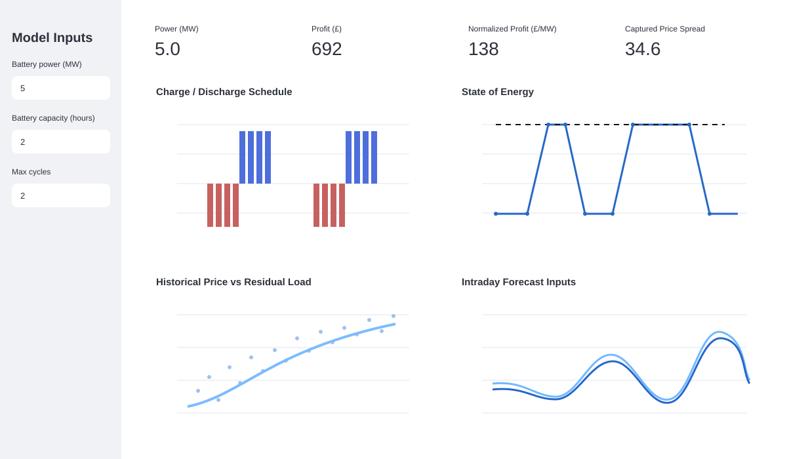
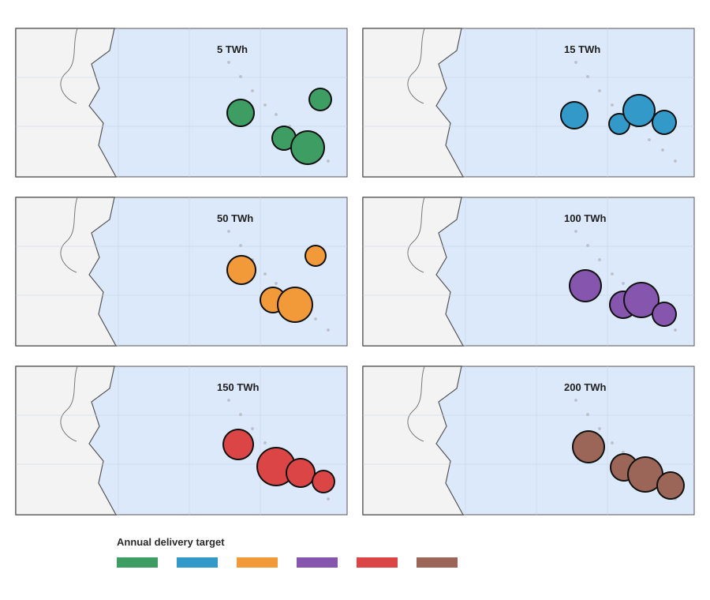
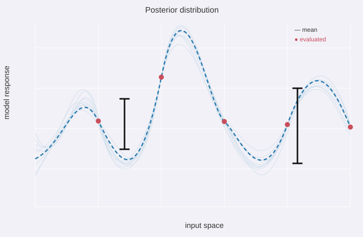
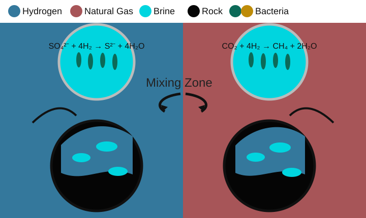

Hello! I recently completed my PhD in Chemical Engineering at the
University of Manchester. My research focused on modelling underground
hydrogen storage and understanding how reservoir physics, operating
decisions, and uncertainty affect storage performance.
I build transparent, data-driven models that turn complex energy-system
questions into decision-ready insights. During my PhD, I developed
high-fidelity flow and reactive-transport simulations, automated
thousands of modelling runs, built Gaussian Process and neural-network
surrogates, and evaluated more than 200,000 storage strategies across 96
UK sites. More recently, I have applied the same quantitative approach to
GB power-market analysis and battery-dispatch optimisation.
I enjoy connecting rigorous modelling with clear commercial and
operational decisions. I have now graduated and am excited about what
comes next—particularly opportunities in energy modelling, quantitative
analysis, power markets, and storage. If you are working on an interesting
energy problem, I would be glad to hear from you.
Projects

A Python and Streamlit workflow using BMRS data for residual-load
analysis, price estimation, and constrained battery scheduling. It
connects historical market behaviour with intraday forecasts and
operational battery limits.
Python · Streamlit · BMRS · Plotly
View project ↗

A techno-economic decision framework for comparing underground
hydrogen-storage strategies. Neural-network surrogates and
mixed-integer optimisation identify cost-effective portfolios of UK
depleted gas reservoirs under different national delivery targets.
Neural networks · MILP · Gurobi · Scenario analysis
View project ↗

Gaussian Process surrogates and uncertainty-driven sampling reduce
the number of expensive reservoir simulations needed to explore a
large operating space, supported by automated high-performance
computing campaigns.
Gaussian processes · Active learning · HPC · Uncertainty
View project ↗

Coupled physical, chemical, and biological simulations quantify how
mixing, buoyancy, microbial reactions, and operational choices affect
hydrogen purity and recovery in depleted gas reservoirs.
DuMuX · Reactive transport · C++ · Subsurface flow
View project ↗
2025
E. Vahabzadeh, S. Hogeweg, F. Nazari, B. Hagemann,
D. Polya, J. Lloyd, and V. Joekar-Niasar
Energy & Fuels, 2025
2025
E. Vahabzadeh, I. Buntic, F. Nazari, B. Flemisch,
R. Helmig, and V. Joekar-Niasar
International Journal of Hydrogen Energy, 106, 790–805
2025
F. Nazari, R. Farajzadeh, J. Shokri, E. Vahabzadeh,
P. Lopez-Porfiri, M. Perez-Page, and V. Joekar-Niasar
Chemical Engineering Journal, 507, 160143
2024
F. Nazari, S. A. Nafchi, E. Vahabzadeh,
R. Farajzadeh, and V. Joekar-Niasar
International Journal of Hydrogen Energy, 50, 1263–1280